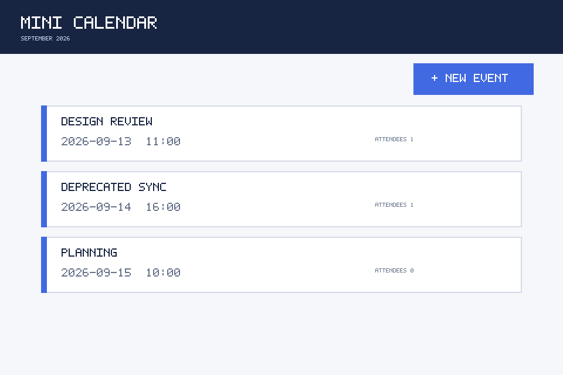
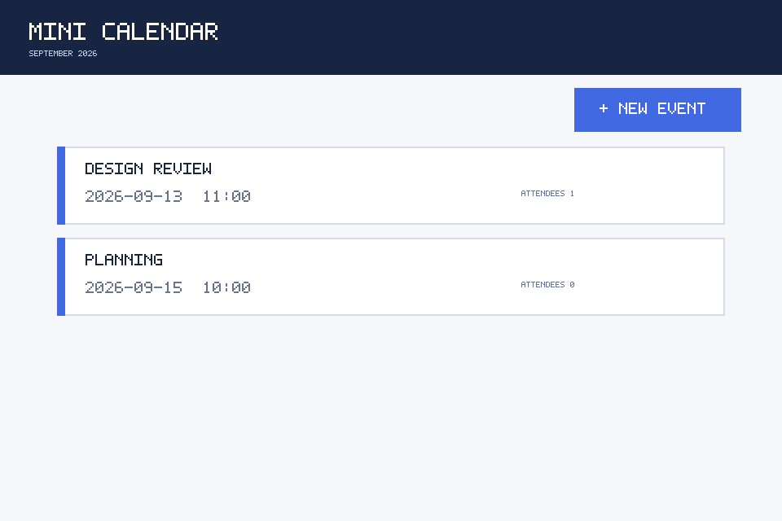
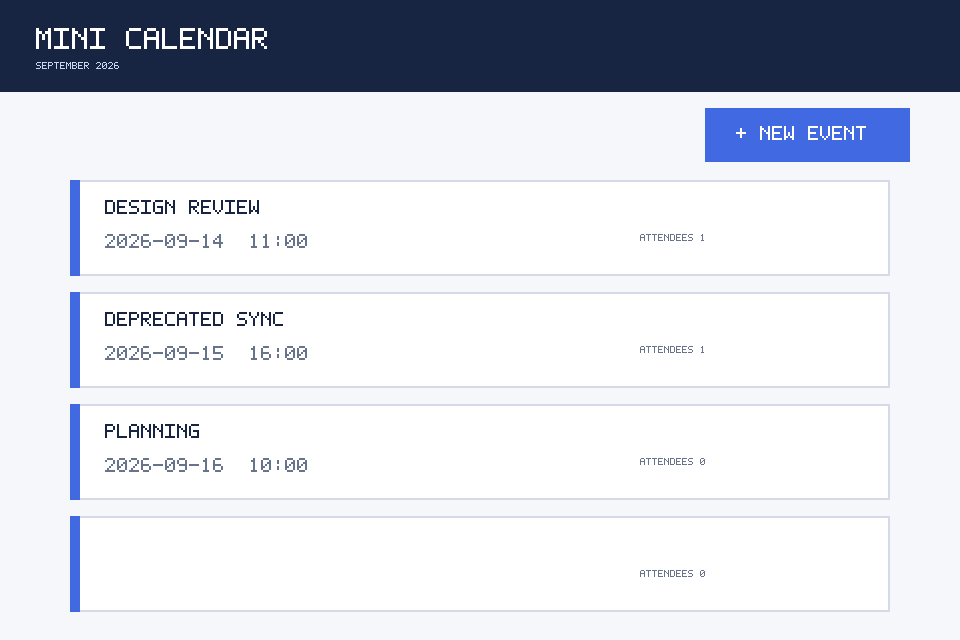
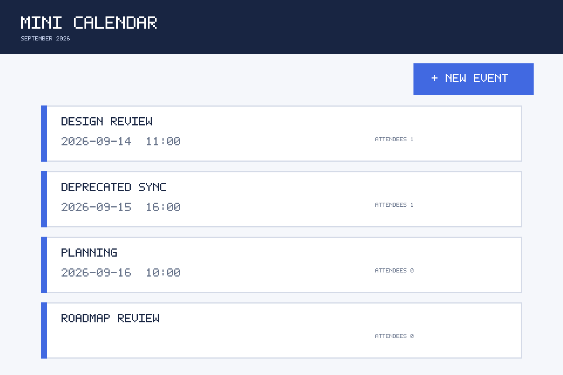
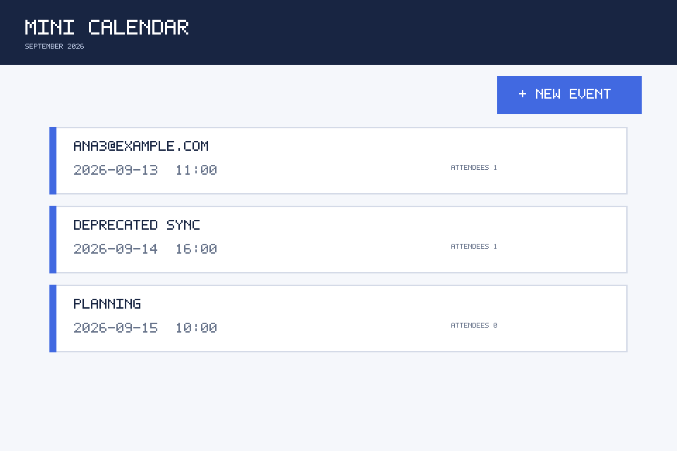

delete_01: Delete Deprecated Sync and confirm
delete_event · dev · candidate stop=no_change_loop
gold=application_regression




Blind reason: identical executed actions succeed on the known-good reference
Candidate and known-good reference receive the exact same parsed ShowUI actions. Gold is revealed only after prediction.
delete_event · dev · candidate stop=no_change_loop


Blind reason: identical executed actions succeed on the known-good reference
add_attendee · dev · candidate stop=no_change_loop




Blind reason: candidate and reference fail with the same terminal observation
create_event · dev · candidate stop=no_change_loop



Blind reason: both runs fail but their terminal observations diverge
add_attendee · dev · candidate stop=no_change_loop




Blind reason: candidate and reference fail with the same terminal observation